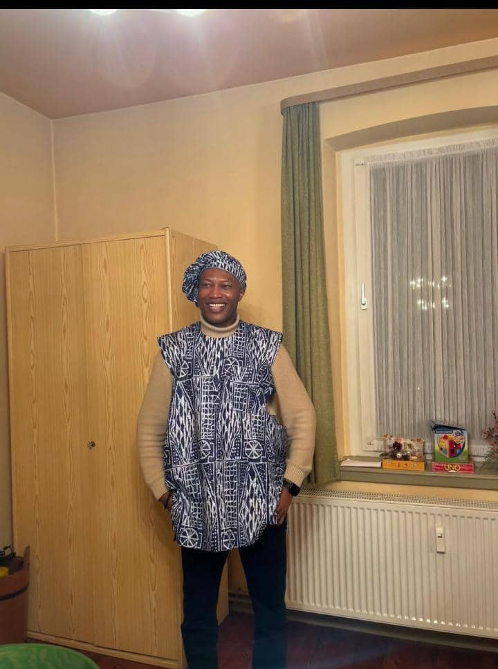

About Rev Fr Dr Anthony Ezekwu
Very Rev. Fr. Dr. Anthony Okechukwu Ezekwu.
A priest of the Catholic Diocese of Enugu, Nigeria.
A native of Akama Oghe in Enugu State of Nigeria.
Studied Philosophy and Theology at Bigard Memorial Seminary Enugu, Nigeria where he was elected as the President of the Students Union Government (SUG), to serve his fellow Seminarians.
OND and HND in Mass Communication at the Institute of Journalism Enugu state Nigeria.
Masters degree in Social Ethics at the Guttenberg University in Mainz Germany.
Doctorate Degree in Social Ethics at the Guttenberg University Mainz Germany.
Ordained a priest in 2005 at Enugu Nigeria.
Was Elected the first president of the Akama Oghe Priests and Religious association, Enugu.
Was Elected the first General Secretary of Awgu Diocesan Presbyterian Council.
Was Episcopal vicar for youths at the Catholic Diocese of Awgu in Enugu state Nigeria.
Was Lecturer and Spiritual Director at St. Bernard's Seminary Nchatancha Enugu.
Was Deputy Director of the Catholic Institute for Development Justice and Peace (CIDJAP) Enugu Nigeria.
Was Chaplain, Holy Rosary College Uwani, Enugu Nigeria.
Was appointed Provincial Chaplain of the Guild of St. Anthony of Padua, Onitsha Ecclesiastical Province in Nigeria.
Served as Parish Priest and chaplain in different parishes and organizations in Enugu Nigeria.
A mentor, teacher, writer, advocate for the youths, poor and oppressed, spiritual director and relationship counselor.
Written numerous books including CRISIS OF MORALITY AMONG YOUTHS, LOVE AT FIRST SIGHT, IGBO NAMES HAVE SPIRITUAL MEANING, DIVINE TRANSFORMATION, RELIGION, POLITICS AND ETHNIC GAMES IN NIGERIA, etc, and numerous articles.
Engaged in Social projects aimed at helping children and youths to achieve their potentials, advocacy for justice and equality, in line with the words of Lk. 4:18.
Built and donated a standard school for both primary and secondary school in Akama Oghe Ezeagu.
Built and donated a solar powered borehole for Akama Oghe community.
Donated a school bus for the students and pupils of St. Mary's group of schools Akama Oghe.
Placed numerous students and undergraduates under scholarship and monthly stipends to assist them in actualizing their potentials in life.
Runs a foundation known as JUGENDPROJEKT ENUGU.
Currently lives and works in Germany as a Research Fellow with Global Ethics.
Guiding principle: "Do the right thing always."
Enjoys reading, traveling and sports.
Gallery


Achievements
Ministries & Programs
Ordained Catholic Priest since 2005.
Episcopal Vicar for Youths, Diocese of Awgu.
Lecturer and Spiritual Director at St. Bernard's Seminary.
Chaplain at Holy Rosary College and various parishes.
Provincial Chaplain of the Guild of St. Anthony of Padua.
Deputy Director at CIDJAP, promoting peace and justice.
Youth mentorship, counseling, and empowerment programs.
Ongoing social advocacy aligned with Lk. 4:18.
Current Research Fellow with Global Ethics in Germany.
Testimonials
Contact & Connect
Follow on social media: